Flower of Scotland Posted on August 25, 2017
Tag 22
Fenwick - Tranent 96 km
Nachdem ich in den vergangenen Tagen vergeblichst versucht hatte, auf Warmshowers jemanden zu finden, der mich in Edinburgh aufnimmt, hatten sich am Vorabend gleich zwei Menschen aus Edinburgh und der Umgebung gemeldet. Aufgrund der geringeren Entfernung sagte ich bei Emma und Sylva in Tranent zu. Von nun an ging es nicht weiter entlang der Küste, sondern auf direktem Wege in Richtung Edinburgh.
Bereits nach ein paar Kilometern erreichte ich die schottische Grenze. 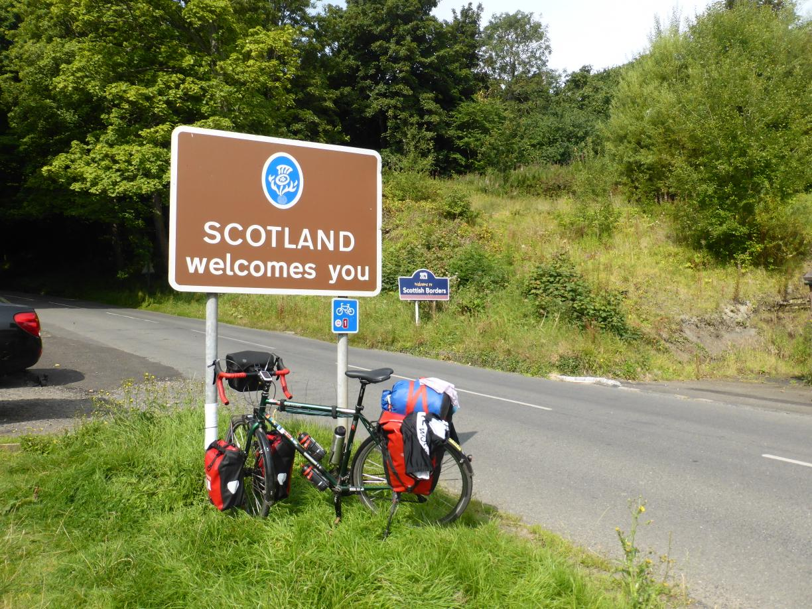 Meine Route führte mich auf über 300 Meter in eine karge Hügellandschaft. Für einige Zeit sah ich kaum Menschen, dafür aber jede Menge Schafe. 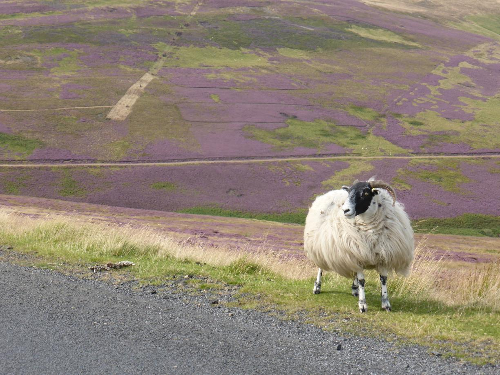 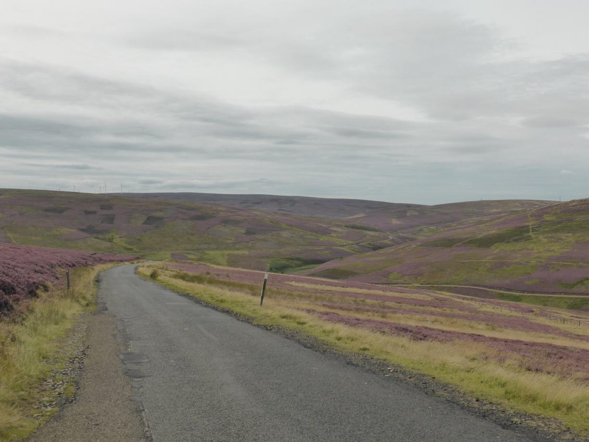
In Tranent angekommen wurde ich von Emma herzlich empfangen. Wir erzählten uns gegenseitig von unseren Reisen und ich habe viele Tipps bekommen, was in Edinburgh und Schottland sehenswert ist. Sylva konnte ich leider nicht kennenlernen, da sie Nachtschicht hatte.
Tag 23
Ruhetag
Nachdem ich ausgeschafen hatte fuhr ich mit dem Bus in die Stadt. Aufgrund des Edinburgh Festivals war die Stadt, und insbesondere die Royal Mile, sehr überlaufen.
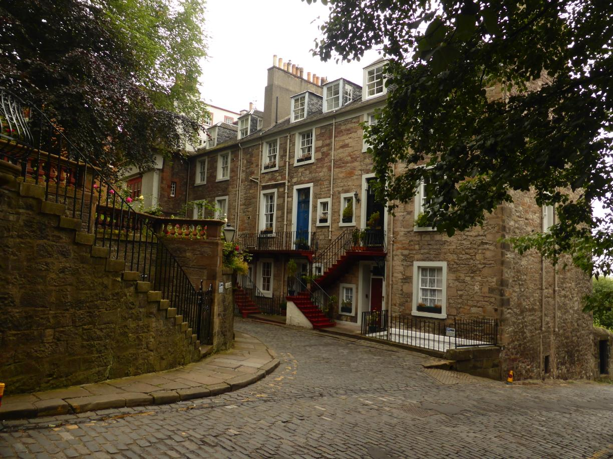 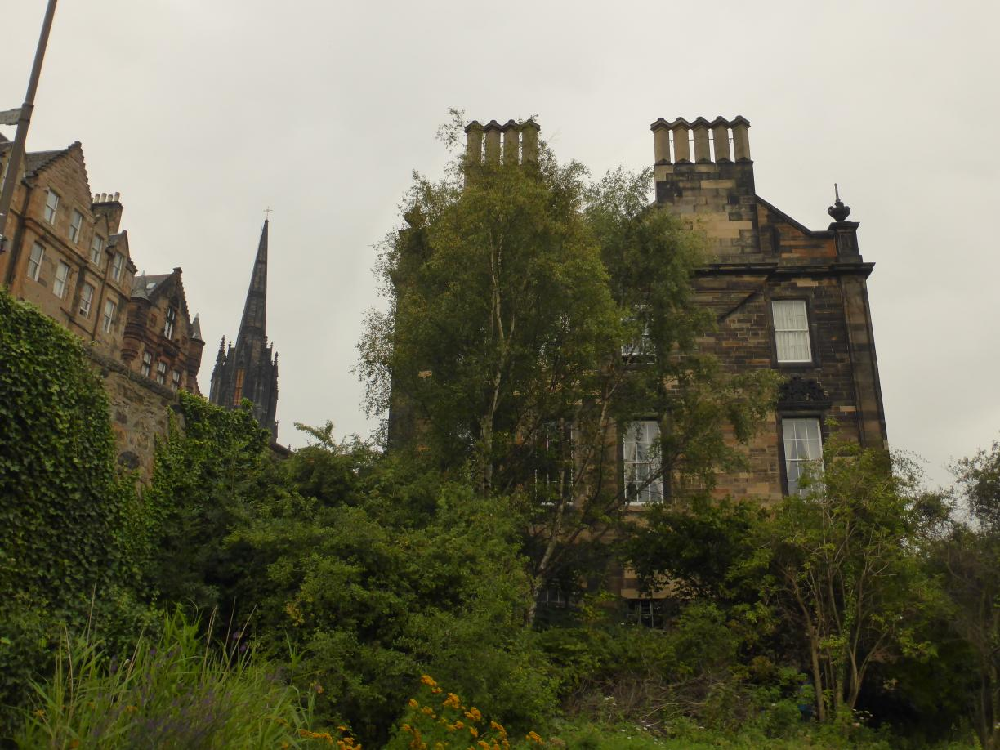 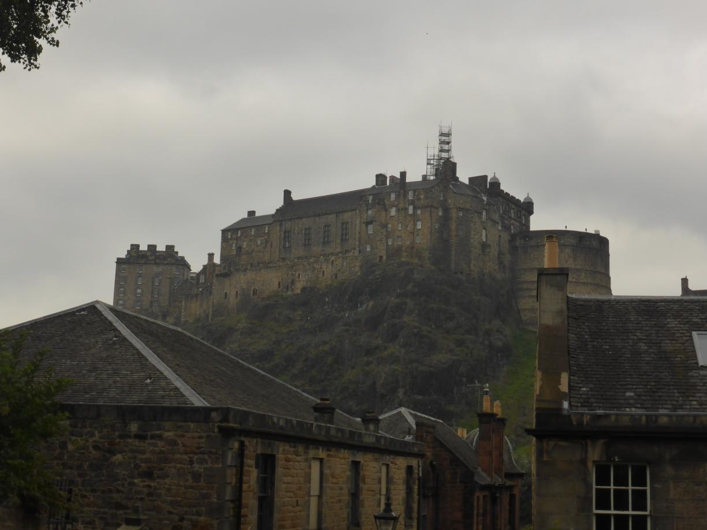 Nachdem ich ein wenig ziellos durch die Stadt gelaufen war, blieb ich im schottischen Nationalmuseum hängen. Dieses kann ich jedem nur wärmstens empfehlen. Der Eintritt ist frei und es gibt eine Menge zu entdecken. 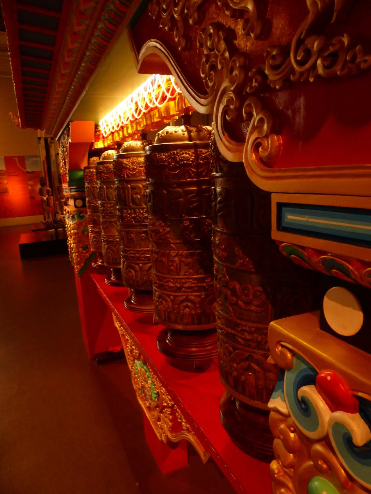 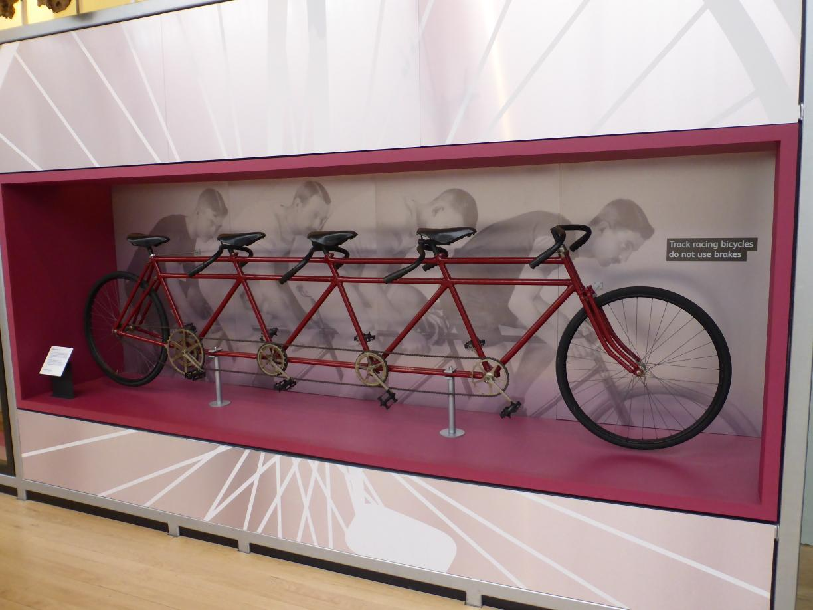 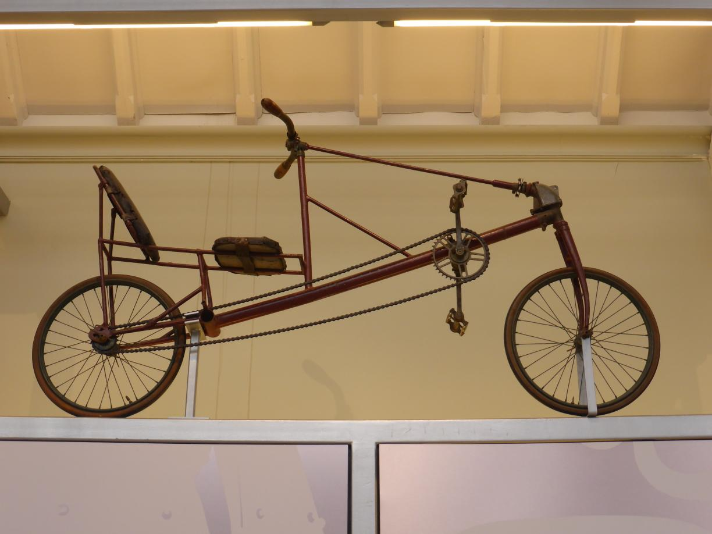 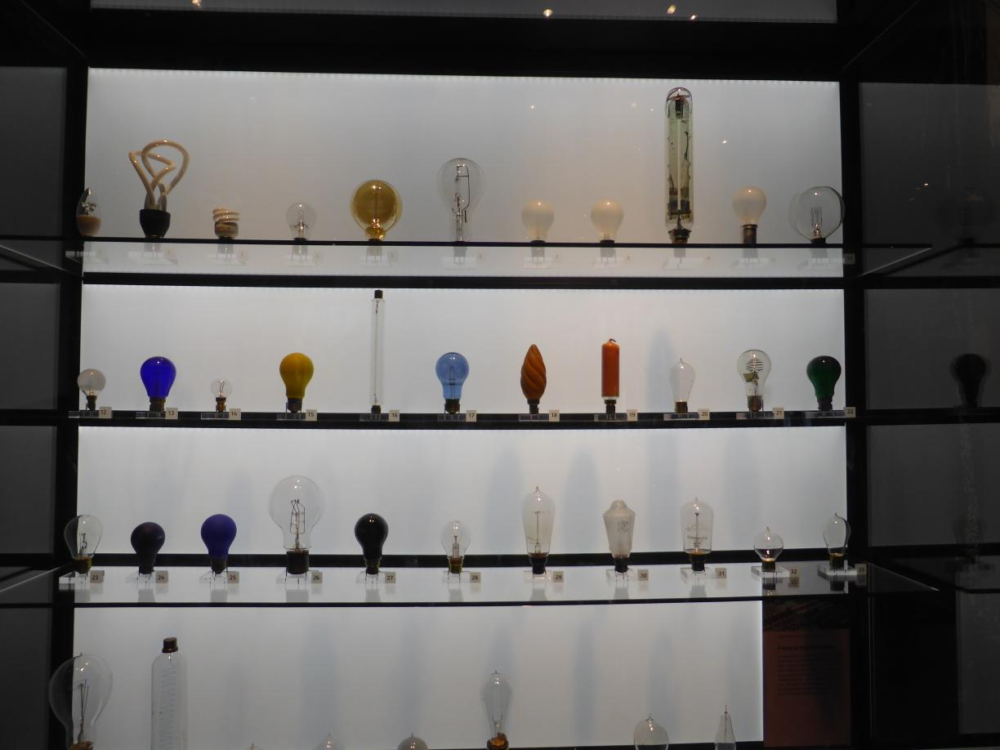 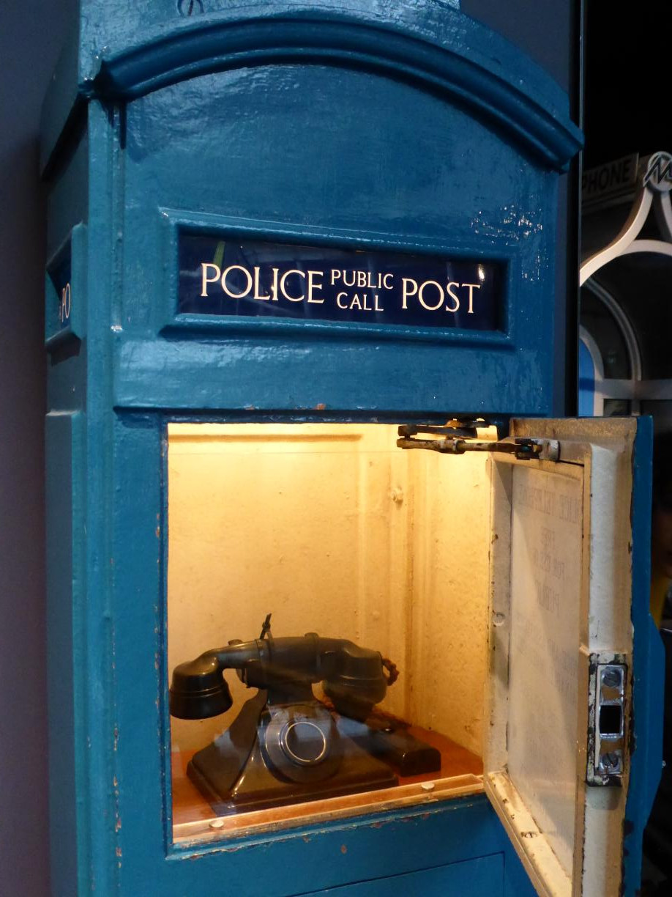 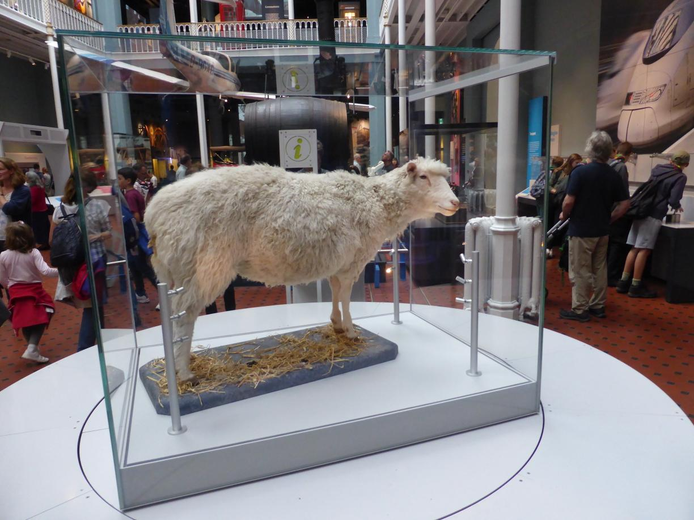 Anschließend war ich noch bei einem Outdoorshop, wo ich Spiritus für den Kocher und eine Schottlandkarte erstand. 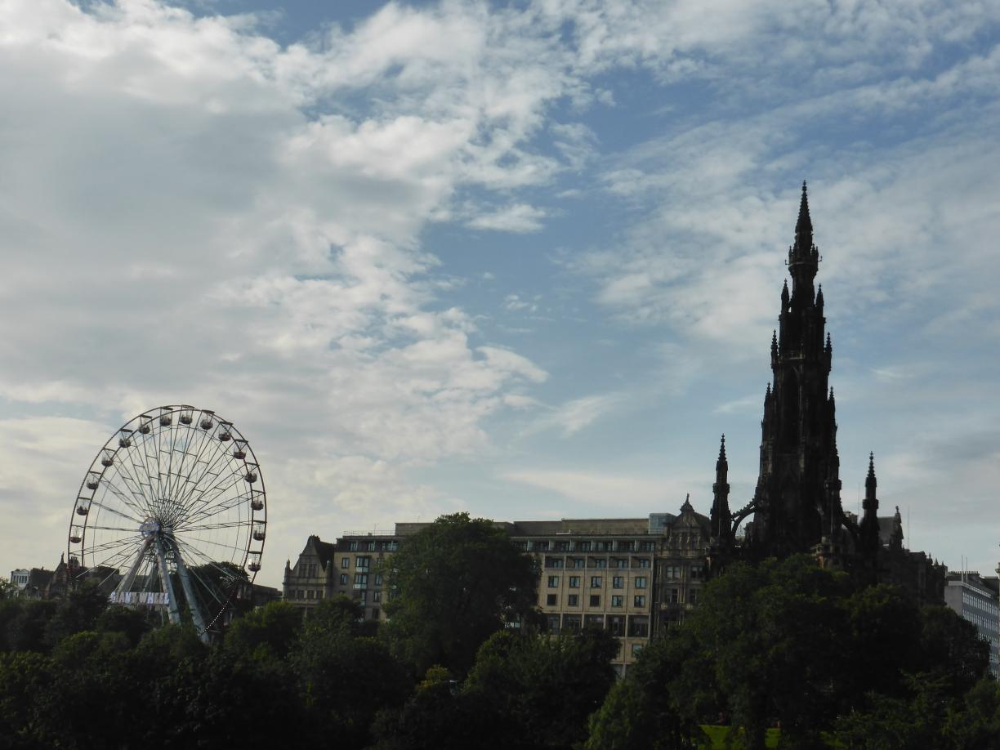
Tag 24
Tranent - Milnathort 79 km
Am nächsten Tag musste ich mal wieder feststellen, dass ich nach einem Ruhetag immer Problem habe wieder in Fahrt zu kommen. Ich ließ es dementsprechend erstmal ruhig angehen.